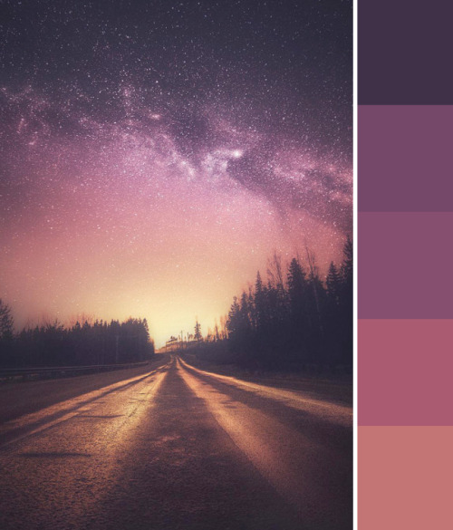

Sunday 20th February 2022
When I first started my assignment, the home page had looked like the example web pages in the last few slides of Topic 2 -2. I used the same layout before I figured out how I wanted my website to look. This was by removing the aside as it wasn't needed. I had also moved the navigation to be above the header and across the page.
Saturday 26th March 2022
My next plan of action was how I wanted the content to look in my website, which was to have it in the center as I didn't like having alot of space on the right hand side of the webpages. Having the content in the center allowed the space to be balanced on both sides of the webpages without looking too empty.
Wednesday 6th April 2022
I had also added a cartoon picture of myself and a small description of why I had created this website. I had also decided on the theme of the website. I had used the Coolors website and used the generator to generate a palette of colour. When none of the palettes were to my liking, I had used Google to find a colour scheme that I liked and came across this image, as shown below.
